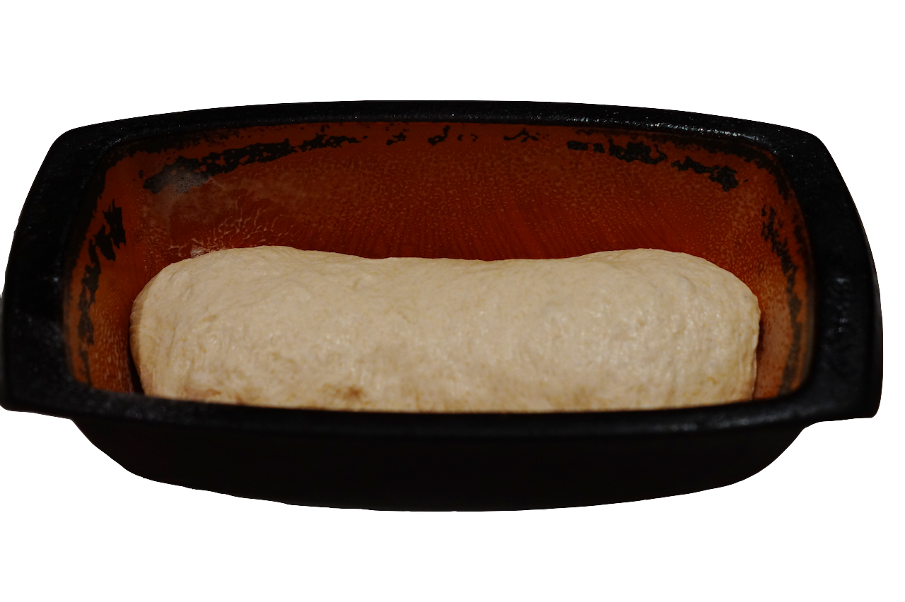

A sourdough culture looks like this. It's flour and water with a bunch of micro-organisms, including yeast, in it.
Borrow some from someone else. Or if you want to make your own, mix together flour and water and feed it every day. After a week or two, you'll notice it rising and bubbling after feeding, and it will be ready to use.
Every one or two days, feed it. Throw away half of it (or use it to make bread) and top it up with flour and water.
If you're going away, keep it in the fridge. I've kept sourdough alive for up to 3 months by making a large batch, with more flour and less water, and keeping it in the fridge.
Thats it!